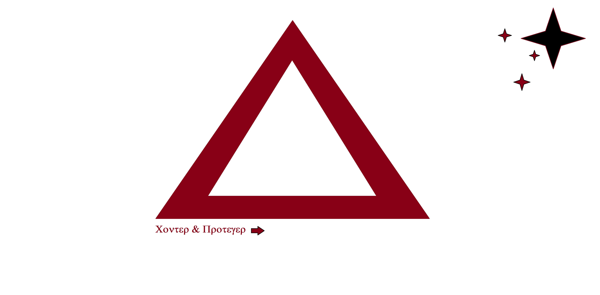
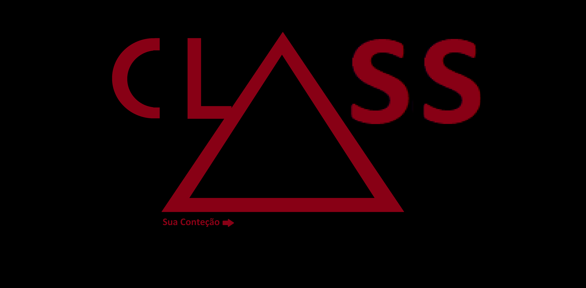
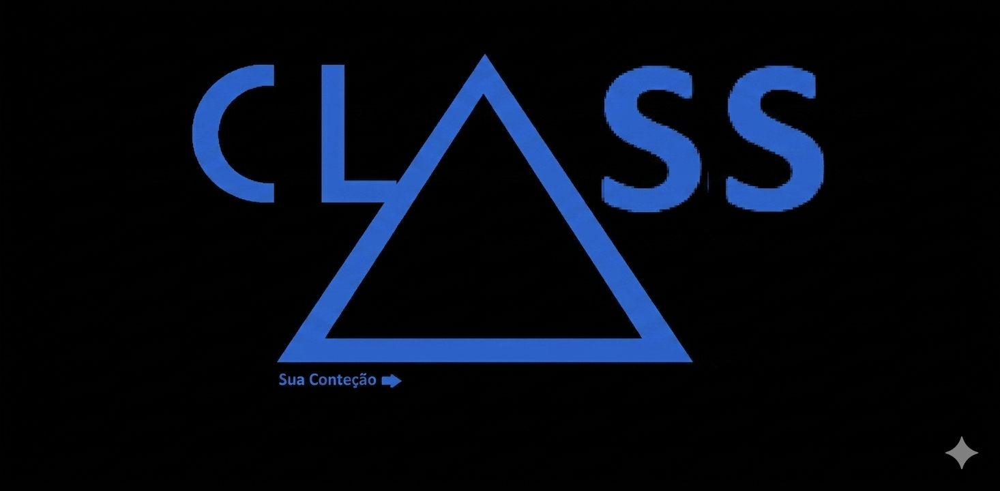

RADIAÇÃO: 0.04mSv (ESTÁVEL)
DATA: 19.04.2026
DADOS GOVERNAMENTAIS: APASTEL
Este terminal contém informações sigilosas sobre a superpotência de Apastel e as operações da FaC.

> Apastel começou bem pois vendeu muito recursos sendo país neutro até a chegada da primeira guerra mundial. Inglaterra perdeu e Alemanha também pelo Apastel.
> Na Segunda iniciou sua grande super potência, Apastel ficou em primeiro lugar em militarismo ou economia.
> Por enquanto agora, EUA lidera o top 1.
> Moradores de ruas são muito, mas muito baixos, quase zero, e os que são, são basicamente um morador médio ou alto nível dos EUA. Apastel focou muito em si mesma ela pensou no futuro, igual os EUA, não ajudou a Inglaterra esperou ficar sem recursos e pediu pros EUA recurso assim ganhando grana e tal na segunda guerra.
> Aqui são 4 presidentes. Os 3 têm que concordar com o outro que for colocar algo, se um recusar, é rejeitada.
HIERARQUIA MILITAR DE APASTEL
Progresso militar estruturado do mais fraco ao mais forte.
> Início da carreira militar, aqui ele ainda não pode escolher entrar na FaC, eles só podem se alistar mesmo.
> Fazendo coisas básicas de todo militar em qualquer país, com uniforme preto básicas com as ombreiras vermelho escuro, eles são os que têm basicamente nada do uniforme.
> Aqui podendo ir pra linha de frente ou não. Ainda utilizam o mesmo uniforme da classe-Z, mas com nível mais alto já iniciando seu salário e seus primeiros documentos.
> Iniciando primeiros passos de treinamento pesados.
> Aqui onde ficam os Tenentes, Major/Coronel e Sargentos de Elites, lógicos com suas sub-divisões como Class-M!T = Tenente Mascável, e vai assim.
> Aqui é onde você pode chegar sem ser "frio", não literal pois as próximas classes são diferentes.
> Iniciando pra entrar na FaC, ou se tornar mais do que humano nas próximas classes. Aqui o treinamento supera todo seu corpo físico.
> 86,8% perdem aqui e os outros continuam.

> Superiores às Navy Seals, só foi usado uma vez na segunda guerra mundial, sendo o maior medo dos nazistas ao ver a classe-K.

> Até agora não foram usados. Mas os treinamentos, um soldado EuP para ele, acertar um alvo direto no cérebro ou no coração a 800 Kilometros com uma Desert Eagle, é NADA.
FaC (CONTENÇÃO UNIDAS FRAGMENTADAS)
> Bases de pesquisa que ajudaram a criar as classes, aqui só cientista de alto nível. Lógico que não é nível a navy seals, mas é bem famosa pelo mundo.
> Principalmente pelas novas tecnologias, como rádios do exércitos a alcance de 8000 kilometros (Em testes).
> Salário: Depende da sua reputação, em média $4358,98 Astsm (moedas do País).
ARQUIVO: CLASS-PNF (PROJETO NÃO FÍSICO)
> A FaC encontrou um lugar, por causa de um funcionário encontrou um lugar na casa dele, um labirinto de 5000km ao quadrado, impossível ter na sua casa.
> Com as pesquisa a resposta é basicamente espécie de Lixo-Físico (nome dado) se você bebe um refrigerante todo, o que sobra? o lixo, no caso a garrafa. Todo material tudo tem isso, resto de uma supernova ou estrela.
> Mas e a física, e a... gravidade? Seria o inverso dele, não. Seria objetos que não cabem na física real, por isso o nome Lixo-Físico. A FaC o chamou esse Lixo-Físico de Class-PNF ou Projeto Não Físico, onde irão cuidar e desvendar e se é possível conter.
> Ao todo a única "entidade" encontrada foi o Não-Bugado, é uma espécie de glitch que tem em algumas salas com sofás. Se você tocar neles com aparência glitch, você morre, ou melhor some.
> Mas é bem fácil de conter, só são algumas salas específicas, já que elas não mudam e sim, são fixas.
> Algumas salas iguais escritório outras com piso liso, parede de chumbo ou plástico, com zumbido agudo nas lâmpadas de led no teto, um labirinto finito simplesmente.